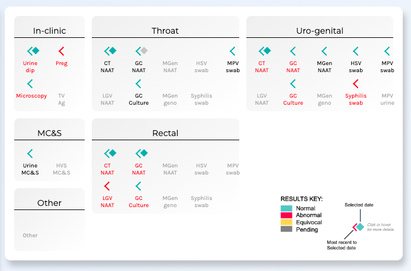
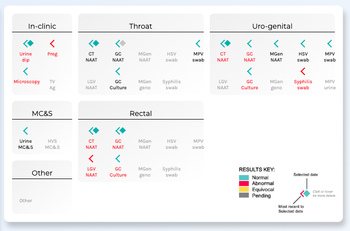

I worked together with a doctor, the subject matter expert, to bring his visual design of a dashboard to life, creating an interactive timeline visualization befitting of high dimensional medical data
One of the challenges was implementing the complex logic of encoding the glyphs and labels, enhanced by the temporal and hierarchical nature of the data.
Click here to go directly to the interactive visualization.
The layout choice
It is a large single timeline with 5 vertical domains, hybridised with five adjacent date-specific panels. Each domain represents a medical health category. Data are defined by 4 'conceptual dimensions': Entity (e.g., 'HIV test set'); Property (e.g., Result), Temporal (e.g., Point, Interval or Relational) and Evaluative (e.g., Abnormal, Normal etc.).
Before
The client had prototyped a static version

Features
The client required a timeline and side panel of each health category to be aligned exactly to ensure ease of reference between the timeline and panel contents.
Glyphs are customized for each test category and encoded to visualize multiple attributes of the element simultaneously. Glyphs also have to be placed strategically on screen in specific rows and columns. Doctors are accustomed to processing high volume of information and test results to assess the patient condition. Hence, there was a necessity to over-encode the glpyhs so that as much information can be gained at a glance.
The 'traffic light' colors alongide a legend help doctors intuitively understand health results. To help doctors understand the color encoding of labels, hover tooltips were implemented
 

The dashboard refreshes instantly whenver a new date is selected. A red reference line helps the doctor identify the selected date of the health results easily.